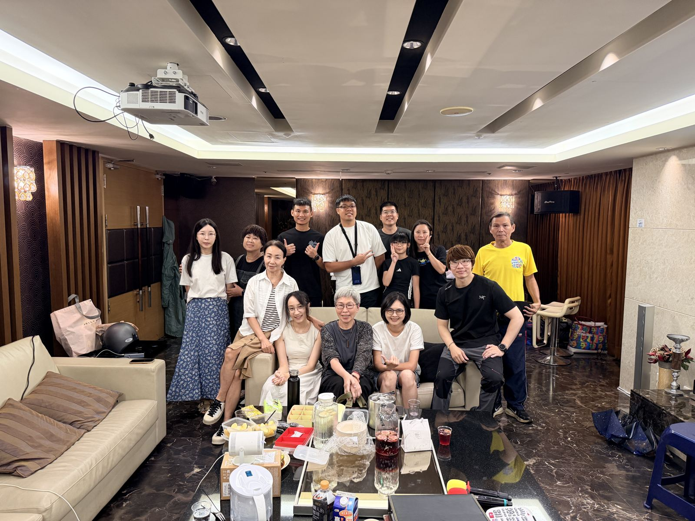
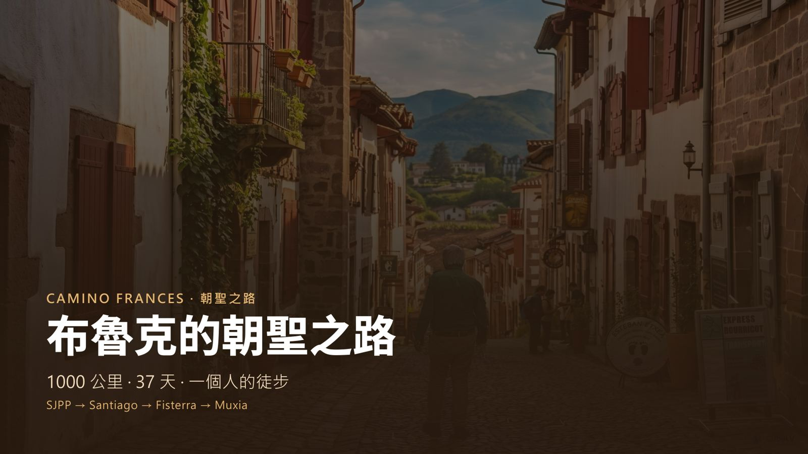
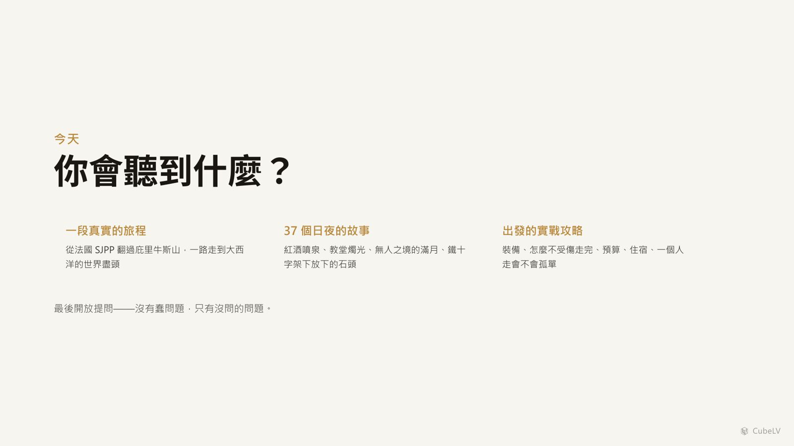
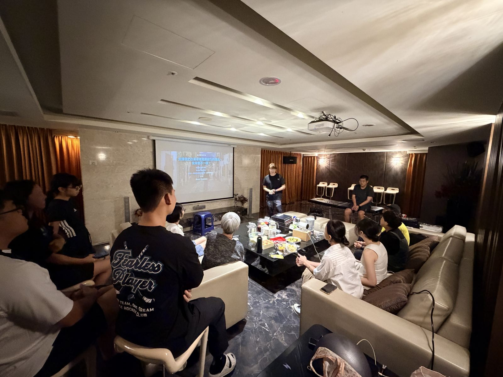
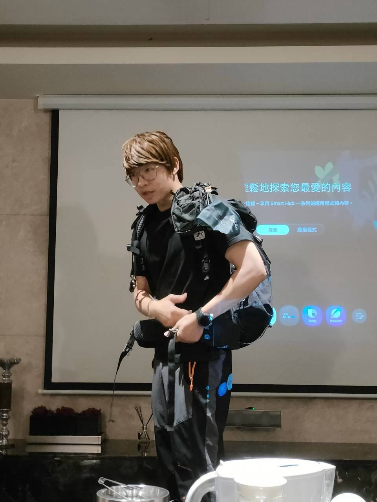
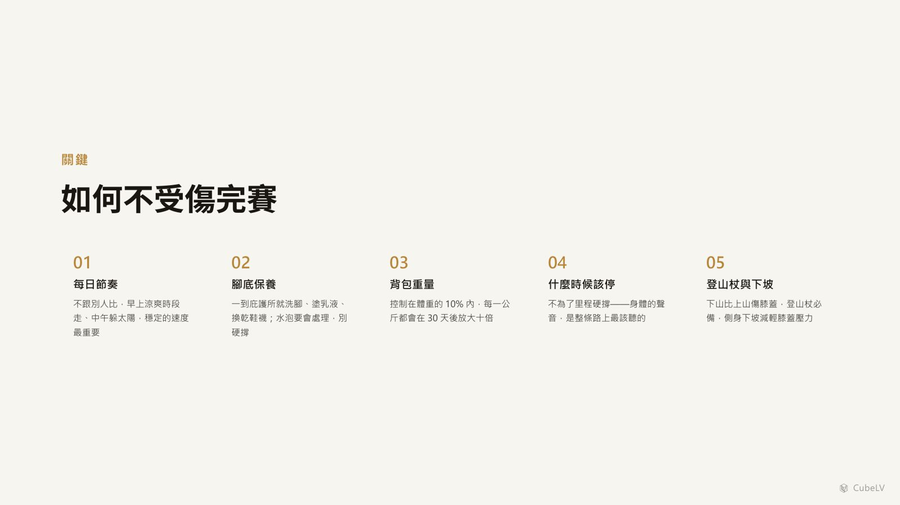
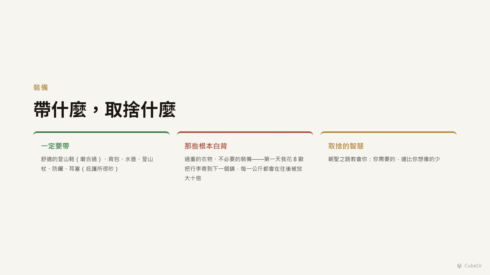
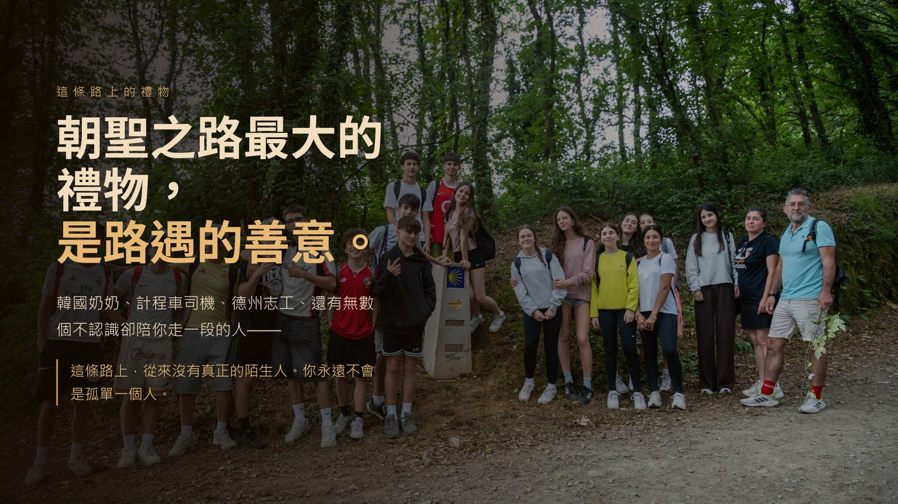
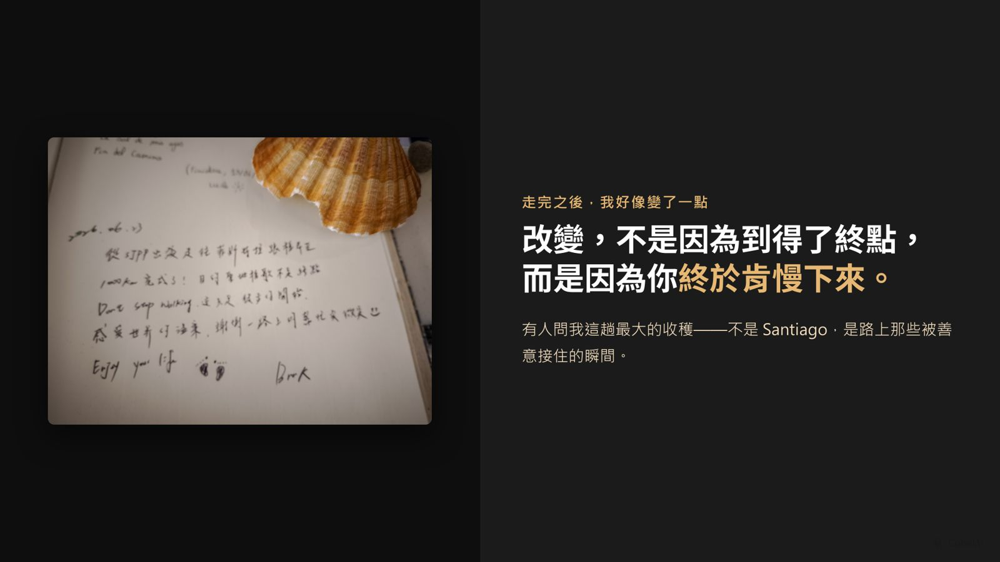
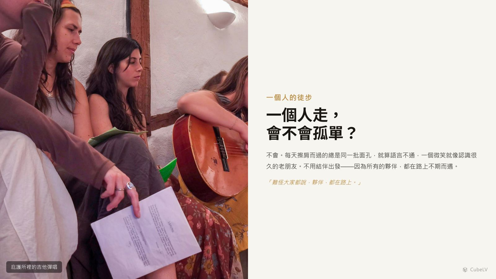

第一場朝聖之路分享會精采花絮
1000 公里的故事、裝備、還有一杯桑格利亞——圓滿落幕！
🎉 第一場 · 2026 / 8 / 30（週日）台中世界之心 · 15 位朋友齊聚
🎉 第一場分享會，圓滿落幕！
15 位朋友齊聚台中世界之心，故事、裝備、提問、桑格利亞——120 分鐘捨不得結束的下午
往下看現場花絮照片＋簡報精華
📖 當天回顧
開場：一趟 1000 公里的旅程，濃縮成兩小時
從法國 SJPP 出發，翻越庇里牛斯山、穿越梅塞塔高原、走進加利西亞的綠色丘陵——37 天 1000 公里的故事，在世界之心的沙發區裡重新走了一遍。簡報開場就把大家拉回那條路上。



背包背負教學：背對了，重量就不再只壓在肩膀上
背著 10 公斤的背包，為什麼有人走沒多久就肩膀痠痛、腰背疲憊，有人卻能走得穩、走得久？關鍵不只在背包重量，更在於有沒有用對背法。
現場示範從肩帶、胸帶到腰帶的調整方式，帶大家了解如何讓背包更貼合身體，並將重心放在正確的位置。背包的重量不應該全部由肩膀承擔，而是要透過腰帶將重量有效轉移，讓髖骨承擔主要負重，肩帶則負責固定背包、維持穩定。
當背包背對了，重量會更平均地分散在身體上，不僅能減少肩膀與背部的壓力，也能降低長時間行走時的疲勞感。同樣是 10 公斤，調整好背負方式，就能省下許多不必要的力氣，走得更輕鬆、更穩，也更安全。
背包不是直接「背上去」就好，而是要學會讓身體和背包一起分擔重量。調整到適合自己的背負方式，才能真正做到：背得對，才走得遠。


裝備分享：4 公斤，裝下真正需要的東西
走上長距離越野路線後，所有的擔心，最後都會變成背包裡實際的重量。
這趟裝備分享，談的不只是「要帶什麼」，更是什麼可以捨棄、什麼值得留下。經過實際使用與反覆磨合，才會知道哪些裝備真正派上用場，哪些東西只是因為擔心而帶著，最後一路背著，卻從未用過。
從磨合完成的越野跑鞋、適合長時間負重的背包，到水壺、登山杖、防曬用品，以及在庇護所休息時不可或缺的耳塞；還有兼具保暖、排汗與舒適度的羊毛衣物，以及值得推薦的羊毛五指襪。每一件裝備，都不是單純「帶不帶」的問題，而是要思考：它是否真的能在關鍵時刻發揮作用？
當裝備重量控制在 4 公斤左右，背負的不只是物品變少了，更是讓身體少一點負擔，讓每一步都多保留一些體力。走得越遠，越能明白輕量化不是一味地少帶，而是在有限的重量裡，做出最適合自己的選擇。
買裝備，也不再只是看價格、比功能，而是重新思考它的重量與價值：這件東西值得我用多少重量換來？它帶來的舒適、安全或便利，是否真的足以抵銷一路背負它的代價？
帶得少一點，想得清楚一點；把每一克重量，都留給真正重要的東西。

提問＋金句收尾
費用預算、庇護所住宿、路線選擇、一個人走會不會孤單、水泡怎麼辦——能問的都問了。最後用這句收尾：「改變，不是因為到得了終點，而是因為你終於肯慢下來。」



🍷 當天餐點
現場準備了 桑格利亞調酒和飲品，大家帶來的零食水果擺滿一桌——邊喝邊聊，這才是最標準的分享會吃法。